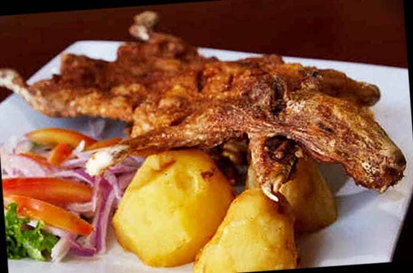

|
EL YAMOR : La comida tradicional es parte del acervo cultural de Otavalo. El plato más conocido
es el Yamor y se lo consume en septiembre, durante la celebración de la fiesta del mismo nombre.
Está compuesto por la chicha de siete variedades de maíz, el mote, tortillas, empanadas y el ají.
Yamor es el nombre de la chicha, bebida ancestral muy apetecida por su sabor dulce.
CUY: Uno de los platillos más tradicionales en la ciudad de Otavalo . Este suele resultar un plato
un tanto exótico para los extranjeros, quienes se ven atraídos al final por su exquisito sabor.
El cuy asado se lo prepara al carbón luego de que haya sido previamente adobado con bastante ajo,
sal y aliños varios e introducido en un palo, que es el que sirve de timón para girarlo.

HUMITAS: En Otavalo ha existido siempre la cocina familiar del buen sabor y de pacienciosas
particularidades basta mencionar las humitas (choclotandas), quimbolitos, las empanadas de
morocho. Conservando costumbres heredadas de las tradicionales comidas andinas ricas en granos,
morocho, quinua, chuchuca, choclo, arveja, etc. Esta comida de cuidado en su preparación no ha sido
sustituída por la comida rápida e importada. rápida e importada.
|